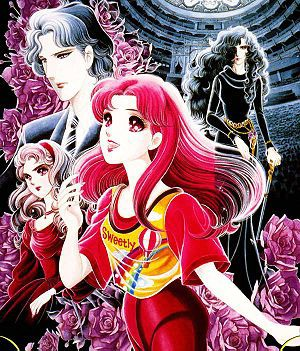

-
Alternative Names: Garasu no Kamen; Glass no Kamen;The Glass Mask
Author(s):Miuchi Suzue
Genres: Comedy, Drama, Romance, Shoujo
Release: 1976
Status: Current
Type: Manga
Length: 38 Volumes 71 Chapters
Read Online @:

More Infor @:

Notes
Maya Kitajima is very clumsy and seems to be bad at everything she does.... but she has a passion for acting. She works at a noodle shop and she has to deliver some to a wealthy looking house, when she delivers the noodles she ends up reciting a whole play she recently saw to the mistress, Chigusa Tsukikage. Chigusa holds the rights to the play "The Crimson Goddess" that is covetted by many in the acting world, but she wont allow it to be produced by an actress who is not worth of playing the title role... Will Maya be the one who gets to act the role?